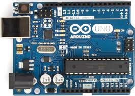

O que é o Arduino?
O Arduino foi criado em 2005 por um grupo de 5 pesquisadores : Massimo Banzi, David Cuartielles, Tom Igoe, Gianluca Martino e David Mellis. O objetivo era elaborar um dispositivo que fosse ao mesmo tempo barato, funcional e fácil de programar, sendo dessa forma acessível a estudantes e projetistas amadores. Além disso, foi adotado o conceito de hardware livre, o que significa que qualquer um pode montar, modificar, melhorar e personalizar o Arduino, partindo do mesmo hardware básico.
O que posso fazer com o arduino?
A lista de possibilidades é praticamente infinita. Você pode automatizar sua casa, seu carro, seu escritório, criar um novo brinquedo, um novo equipamento ou melhorar um já existente. Tudo vai depender da sua criatividade.
Mas, como ele faz isso tudo?
Para isso, o Arduino possui uma quantidade enorme de sensores e componentes que você pode utilizar nos seus projetos. Grande parte do material utilizado está disponível em módulos, que são pequenas placas que contém os sensores e outros componentes auxiliares como resistores, capacitores e leds.
-Veja aqui um vídeo para aprender mais sobre o arduino!
